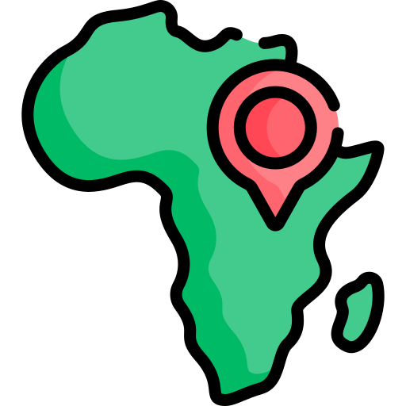

En este blog vamos a hablar acerca de la escasez de un recurso muy importante en este caso es el agua, pero primero tenemos que entender la importancia de estos conceptos por ejemplo
¿Sabemos que tan importante es el agua o conocemos bien el significado de "escasez"? Bueno Aquí te lo vamos a explicar
Desarrollo
Primero para entender que es la escasez de agua vamos a entender que es el agua y cuan importante es para nosotros.
En la mayoría de los organismos el agua representa un 80% de su composición e interviene masiva y decisivamente
en la realización de sus procesos metabólicos; asimismo, desempeña un importante papel en la fotosíntesis de las plantas y
Sirve de hábitat a una gran parte de los seres vivos. En lo que se refiera a nosotros, el género humano, además de beberla,
la utilizamos en un sin número de acciones cotidianas.
Ahora veremos si realmente sabemos el significado de escasez.
La escasez es la poquedad de alguna cosa en este caso nosotros hablaremos del agua. Pero también
puede haber escasez de otras cosas que se consideren fundamentales para satisfacer la supervivencia como lo es escazes de alimentos o de luz incluso de gas
o de recursos no básicos que satisfacen distintas necesidades en las sociedades humanas en varios aspectos.
Motivación
Yo escogí este tema porque es uno de los principales problemas de esta época y de un futuro que es él
quedarse sin agua debido a que nosotros los humanos la desperdiciamos bastante y no somos los únicos que la requieren, y si nos
llegáramos a quedar sin este recurso toda la vida en la tierra podría desaparecer y es un tema bastante intrigante
porque no sabes si para el futuro podremos desarrollar una tecnología que nos ayude con el agua
Cada gota de agua es importante
Top 10 razones por la que cuidar el agua es importante
12/11/21
¿Por que este top 10?
Cuidar el agua es muy importante, pero en verdad la vas a empezar a cuidar cuando
veas lo importante que es con este top 10 y lo útil que es el agua para todos los seres vivos de este planeta
Top 10
Regula la temperatura y los climas del planeta
Sumidero de CO2 y fuentes de oxigenos
Algunas personas no tienen este recurso
Fuente de Energia
Es importante para nuestra salud
Existe muy poca agua dulce en el planeta
Lleva nutrientes
Ayuda al cultivo de alimentos
Mantiene nuestro organismo hidratado y en funcionamiento
Sin agua las plantas no podrian realizar fotosíntesis
Aqui encontraras paginas para que te ayuden a entender mejor el tema de la escasez ya que son paginas oficiales y nos estamos basando en ellas asi que ya sabes si no entendiste algun tema o quieres investigar mas al respecto aqui estan las paginas
Pensemos en el medio ambiente
Video de la escasez del agua en el mundo
26/11/21
¿Por qué este video?
En este artículo vamos a hablar y a rectificar todo lo que llevamos hasta ahora, ya que nos va a ayudar a comprender que es la escasez de agua para que podamos entender mejor
este tema y podamos seguir progresando en nuestro tema
Por: Ecologia Verde el 23 de octubre de 2019
El video nos explica todo lo importante que es cuidar el agua y también nos explica el porqué, pero para complementar solo falta decir que el agua es muy importante para todos los seres vivos y que para cuidarla depende de nosotros y no ser tan irresponsables y usar todo lo que nos menciona en el video
Todo lo que se mencionó en el video ya lo hemos visto antes, pero el video es para complementar todo lo ya vista y nos da más razones para cuidarla, así que si alguna vez quieres recordar algo en el video está resumido y nos ayuda a comprender mejor
Investigacion
18/12/21
Principales paises con escasez de agua
Colombia, un país con fuertes lluvias,
Alguna vez ocupó el cuarto lugar en el mundo en términos de
Disponibilidad de agua, confrontación de conflictos
Uso del espacio para el desarrollo económico y social y
Para proteger el suministro de agua natural.
Crecimiento. La situación actual de la nación ha unido la necesidad de agua en lugares donde los suministros son escasos y lugares donde el suministro de agua es escaso.
Proceso de crecimiento poblacional presión inflación
En un recurso que ya tiene una gran demanda
Mantener una estructura económica y social probada.
Por estas razones, desde 1998 IDEAM, con el fin de mantener
un seguimiento de esta problemática realiza y actualiza el
Estudio Nacional del Agua (ENA) una síntesis de los recurso hídricos de Colombia a la luz de la relaciones demanda-oferta de agua (IDEAM, 1998)
Durante muchos años, el estado de los recursos hídricos
Los países del mundo se evalúan teniendo en cuenta
La cantidad de agua que fluye por el territorio.
diferentes paises
Construccion social de la escasez del agua
Cabe señalar que la posición teórica de este estudio sobre la escasez de agua es antropológica, ya que se enfoca en considerar que la condición antes mencionada surge del desarrollo de relaciones sociales conflictivas. Desde esta perspectiva, es importante no confundir sequía con escasez; El primero se relaciona con las condiciones naturales del medio ambiente, tiene una característica climática y el segundo se refiere a los procesos sociales. Ocurre cuando la falta o ausencia de agua, percibida por un actor o grupo, no se debe a la sequía, sino a la distribución desigual de los recursos hídricos. Entonces puede suceder en un determinado contexto que la sequía significa escasez, porque la duración de la sequía puede ser un factor que vaya en contra del desarrollo de la escasez, pero esto no sucede, entonces la presencia de la sequía, que es la desigualdad de acceso. para el país Kloster 2008, 161-166 . Por tanto, la escasez no es una condición natural sino una construcción social, como resultado del entrelazamiento de acciones sociales.
Sin embargo, con el enfoque teórico sistemático que guió este trabajo, la construcción social de la escasez de agua solo puede entenderse considerando la forma en que se ha creado el suelo socialmente construido. Por ello, el punto de partida es un concepto que gira en torno a los procesos constructivos de la construcción social del territorio.
Desde un supuesto teórico específico, las tierras son consideradas como lugares donde ocurren las condiciones físicas y sociales de existencia; Como dominios construidos a través de enfrentamientos en los que participa la fuerza Marín 1995, 67-131 . Sin embargo, existen otros conceptos teóricos y perspectivas sobre la Tierra. Para algunos autores, este concepto se refiere al espacio físico, donde ocurren los eventos, donde las personas viven y se reproducen; Para ellos, es un campo específico, que no perciben como un espacio de construcción y destrucción, comoun espacio de cambio y proceso, producto de las relaciones sociales de derechos, es decir, el poder, es decir, acciones en conflicto.
En esta obra, los encuentros son las notas de las llamadas relaciones de poder. En resumen, ¿cómo se pueden observar realmente? Pero los enfrentamientos y las batallas entre grupos o individuos pueden registrarse y estudiarse. Esta es la fuerza de la teoría que sustenta este trabajo: tiene el rigor de sugerir lo que se puede observar, porque no es producto de un proceso especulativo sino de una reflexión teórica y vivencial
¿Como convivir con la escasez del agua?
La escasez de agua no significa necesariamente pobreza, como muestra en el siguiente Analisis solo hay 8 países en el mundo que son relativamente ricos.
Con escasos recursos hídricos y países pobres con abundante agua dulce. La sociedad humana avanzada tiene los recursos científicos, técnicos, económicos e institucionales \; Políticas que sean proporcionales a la demanda de agua y viceversa, hacia la sostenibilidad, siempre que las actividades económicas se diseñen en consecuencia y la sostenibilidad sea la participación y el objetivo social deseados.
Las Islas Canarias están ubicadas en la región árida del Sahara, aunque existen zonas de precipitación relativamente alta en sus vertientes norte, afectadas por los vientos alisios y masas de aire húmedo del Océano Atlántico.
La escasez de agua es aceptable y aceptable en muchas partes de Canarias, especialmente: tras el boom demográfico del siglo XX
Sin embargo, esto no significa que ya no sea una región europea con una economía grande y aceptable en comparación con su entorno geográfico vecino. La realización de agua dulce es el resultado acumulativo de grandes esfuerzos económicos e imaginativos, con matices
Es diferente en cada isla y en cada parte de la misma isla.
El agua es uno de los ingredientes principales.
Lo que necesariamente interfiere con el proceso.
personas, además de ser imprescindible para la vida y que
Desempeña un papel fundamental en la naturaleza y sus manifestaciones. Ésta es la razón fundamental de sus complejos efectos sobre el futuro de la humanidad, tanto en
Planificación diaria y a largo plazo. todos
Esto ya se ha explicado a algunos
los detalles. Pero debe verse en contexto
La escasez de agua no es un valor absoluto pero está relacionada con ella
Actividad humana que genera demanda. Paisajes verdes que valen la pena
Tan fértil como la sequedad del desierto, pero su resistencia a la actividad humana es muy diferente y
En circunstancias muy diferentes. Allí juega un papel
Investigando mas acerca del agua.
Escasez de agua en África
07/02/22
Por:Gilmer Dario España López el 9 de febrero de 2022
El mundo y la escasez de agua
21/02/22
Meme
Este meme ejemplifica como esta el mundo con la problemática de la escasez

 Top 10 razones por la que cuidar el agua es importante
Top 10 razones por la que cuidar el agua es importante
 Sitios acerca de la escasez del agua
Sitios acerca de la escasez del agua 
 Video de la escasez del agua en el mundo
Video de la escasez del agua en el mundo Investigacion
Investigacion.png)
.png)
 El mundo y la escasez de agua
El mundo y la escasez de agua